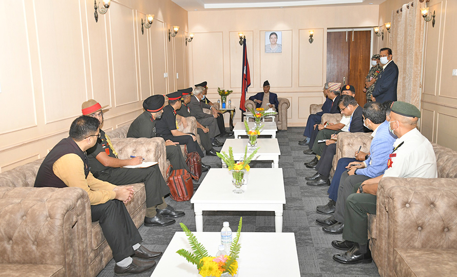

२१ भदौ, काठमाडौं । भारतको स्थल सेनाका प्रमुख मनोज पाण्डेले प्रधानमन्त्री शेरबहादुर देउवालाई भेटेका छन् । मंगलबार प्रधानमन्त्री तथा मन्त्रिपरिषद्को कार्यालय सिंहदरवारमा पुगेर उनले प्रधानमन्त्री देउवासँग भेट गरेका हुन् ।
पाण्डे आइतबार पाँच दिने नेपाल भ्रमणका लागि काठमाडौं आएका थिए । उनले सोमबार राष्ट्रपति विद्यादेवी भण्डारीबाट नेपाली सेनाको मानार्थ महारथीको दर्ज्यानी चिह्न ग्रहण गरेका छन् ।
.............................